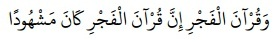

“…dan (dirikanlah pula salat) subuh. Sesungguhnya salat subuh itu disaksikan (oleh malaikat)”. (QS. Al-Isro’: 78)
Diriwayatkan Al-Bukhari dan Muslim dari Abi Hurairah RA bahwa Nabi Muhammad SAW bersabda,
“Saling berdatangan menghampiri kalian malaikat malam dan malaikat siang, lalu mereka berkumpul pada shalat fajar dan asar, kemudian naiklah malaikat yang mendatangi kalian pada waktu malam, lalu Allah SWT bertanya kepada mereka dan Dia Maha Mengetahui tentang keadaan mereka: Bagaimanakah kalian meninggalkan hamba-hamba -Ku?. Maka mereka berkata: Kami meninggalkan mereka dalam keadaan mendirikan shalat dan mendatangi mereka dalam keadaan mendirikan shalat”.
Al-Bukhari: 555 dan Muslim: no: 632
Berikut penjelasan yang diberikan oleh ustadz Ahmad Sarwat LC di eramuslim.com mengenai hadits diatas
Tentu saja malaikat menyaksikan semua shalat setiap hamba, bukan hanya shalat shubuhnya saja. Bahkan semua gerak gerik, tindak tanduk serta segala yang tersirat di dalam kepala kita, Allah SWT telah mengetahuinya. Dan tidak lepas dari catatan para malaikat.
Namun mengapa ada firman Allah SWT yang menyebutkan bahwa shalat shubuh itu disaksikan oleh para malaikat?
Pertama, ayat itu tidak boleh langsung ditafsirkan dengan pendekatan mahfum mukhalafah, atau pendekatan terbalik. Kalau Allah SWT menyebutkan bahwa shalat shubuh itu disaksikan oleh para malaikat, bukan berarti shalat selain shubuh tidak disaksikan.
Kedua, penjelasan lebih dalam tentang mengapa Allah SWT mengatakan bahwa shalat shubuh itu disaksikan adalah karena ada momentum khusus yang terjadi saat shalat shubuh.
Dalam salah satu hadits yang diriwayatkan oleh Al-Imam At-Tirmizy disebutkan bahwa salah satu sebab mengapa shalat Shubuh itu disaksikan oleh para malaikat, karena pada waktu shubuh itu disaksikan oleh malaikat malam dan juga oleh malaikat siang.
Mari kita perhatikan hadits berikut ini baik-baik:
Dari Abi Hurairah ra berkata bahwa Rasulullah SAW bersabda tentang firman Allah SWT, "Wa Qur’anal fajri inna qur’anal fajri kana masyhuda: Disaksikan oleh malaikat malam dan malaikat siang. (HR. Tirmizy dengan derajat hasan shahih)
Jadi momentum yang kami maksud itu adalah adanya dua rombongan malaikat yang menjadi saksi atas shalat shubuh yang dikerjakan seorang hamba. Yaitu malaikat malam dan malaikat siang. Sedangkan shalat lainnya, hanya disaksikan oleh satu rombongan malaikat. Kalau shalat itu shalat malam, maka disaksikan oleh malaikat malam. Sedangkan kalau shalat itu siang hari, maka disaksikan hanya oleh malaikat siang saja.
Selain itu juga ada riwayat yang lebih shahih oleh Al-Imam Al-Bukhari rahimahullah.
Dari Abi Hurairah ra. berkata bahwa Rasulullah SAW bersabda,
"Keutamaan shalat berjamaah dengan shalat sendirian adalah 25 derajat. Dan malaikat malam dan malaikat siang berkumpul pada saat shalat shubuh." (HR Bukhari)
Maka sudah jelas apa yang menjadi pertanyaan anda dengan adanya kedua hadits di atas.
Sumber : Eramuslim.com